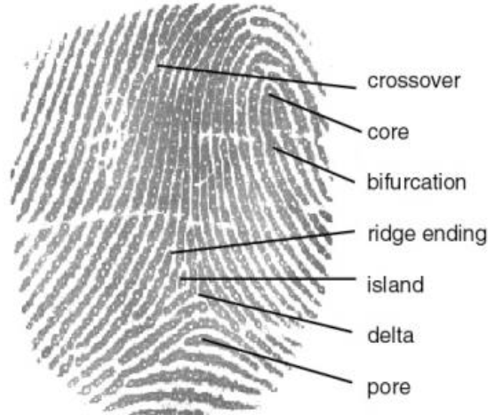
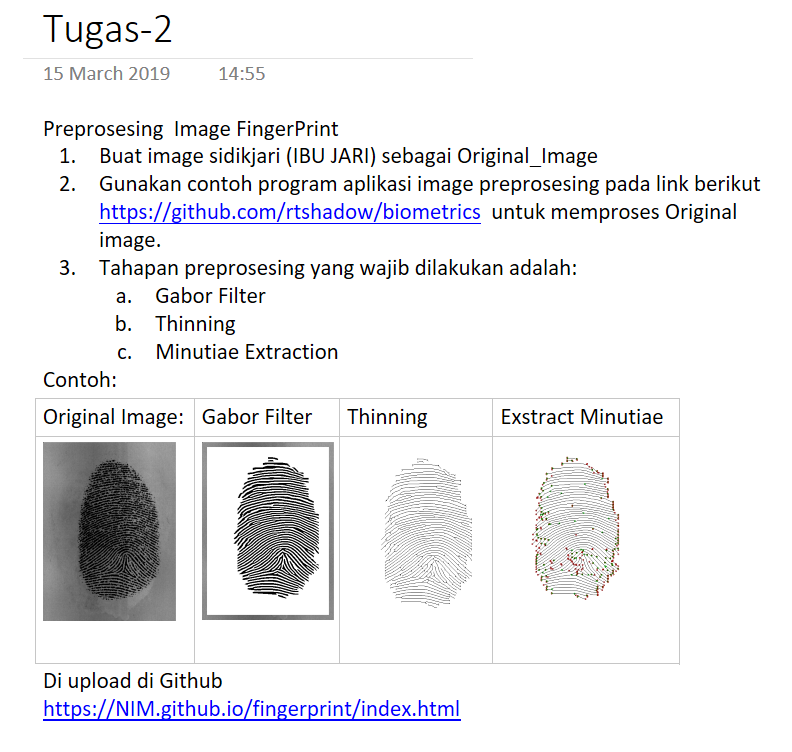

Identifikasi personal menggunakan ciri-ciri alamiah yang terdapat pada organ tubuh manusia, antara lain identifikasi dengan menggunakan sidik jari, wajah, mata (iris) dan perilaku


Membuat virtual environment pada windows command prompt
Studi Kasus: aplikasi Face Detection menggunakan Python dan Deep Learning
(Faster) Facial landmark detector with dlib
Facial landmarks with dlib, OpenCV, and Python
Face detection with OpenCV and deep learning
Raspberry Pi: Facial landmarks + drowsiness detection with OpenCV and dlib
Studi kasus: aplikasi Face Recognition menggunakan Python, OPenCV dan Deep Learning
Face recognition with OpenCV, Python, and deep learning
High Quality Face Recognition with Deep Metric Learning
Studi Kasus: aplikasi Gesture Recognition menggunakan framework Tensorflow Lite